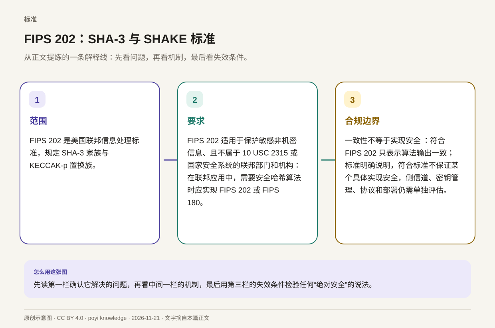
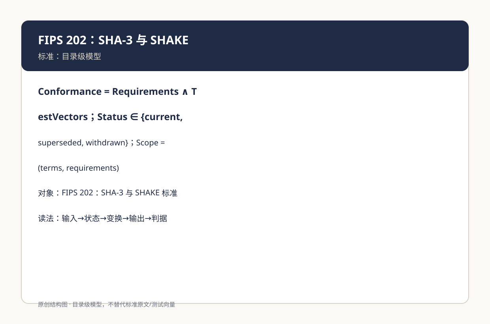

原理与机制
标准：SHA-3 标准（SHA-3 Standard）。FIPS 202 是美国联邦信息处理标准，规定 SHA-3 家族与 KECCAK-p 置换族。SHA-3 家族由四个固定长度哈希函数（SHA3-224、SHA3-256、SHA3-384、SHA3-512）和两个可扩展输出函数（SHAKE128、SHAKE256）组成；六个函数都是 KECCAK-p[1600,24] 的海绵模式。海绵结构把输入当作位串，先按 rate r 分块吸收进 1600 位状态，再用容量 c = 1600 − r 保留不可直接读取的部分；吸收完成后按 r 位挤出输出，直到达到请求长度。SHA3-224、SHA3-256、SHA3-384、SHA3-512 的 rate 分别是 1152、1088、832、576 位，容量分别是 448、512、768、1024 位，摘要长度分别是 224、256、384、512 位；SHAKE128、SHAKE256 的 rate 是 1344、1088 位，容量是 256、512 位，输出长度 d 由调用者选择。六个函数用后缀做域分离：SHA-3 哈希在消息后加 01，SHAKE 加 1111；RawSHAKE128/256 使用 11，并有 SHAKE128(M,d) = RawSHAKE128(M‖11,d) 的等价定义。字节对齐时，q ≥ 2 的 SHA-3 填充以 0x06 开始、SHAKE 以 0x1F 开始，并以 0x80 结束；q = 1 时起始与结束字节合并为 0x86/0x9F。标准表 6 分别给出 q = 1、2、>2 时的 0x86/0x0680/0x06 00…80 与 0x9F/0x1F80/0x1F 00…80。消息按位处理，附录 B 定义十六进制串与位串之间的 h2b/b2h 转换。状态是 5×5×64 位的阵列，KECCAK-p[1600,24] 执行 24 轮，每轮依次应用 θ、ρ、π、χ、ι 五个步骤。SHA-3 的 HMAC 输入块大小 B 等于 rate 的字节数：SHA3-224 为 144，SHA3-256 为 136，SHA3-384 为 104，SHA3-512 为 72 字节。附录 A 表 4 给出 SHA-3 各成员在碰撞、原像和第二原像下的安全强度。

为什么重要
FIPS 202 把 SHA-3 竞赛的获胜方案标准化，作为 SHA-1 与 SHA-2 之外的另一套哈希标准。标准说明四个 SHA-3 哈希与 FIPS 180-4 的 SHA-1/SHA-2 互为补充：它们采用不同的设计原则，为未来的哈希分析进展提供设计多样性；同时提供若干互补的实现与性能特征。SHAKE128 和 SHAKE256 是 NIST 首次标准化的可扩展输出函数，允许应用按需选择输出位数；标准同时把 KECCAK-p[b,nr] 参数化，以便未来基于同一置换族定义新的模式。标准还规定了 CAVP 验证途径：SHA-3 函数、KECCAK-p[1600,24] 和六个模式可在 CAVP 下测试一致性。
应用与实例
FIPS 202 适用于保护敏感非机密信息、且不属于 10 USC 2315 或国家安全系统的联邦部门和机构：在联邦应用中，需要安全哈希算法时应实现 FIPS 202 或 FIPS 180。SHA3-224/256/384/512 是批准的密码哈希函数，可用于 HMAC 等已批准用法；HMAC 的输入块大小按表 3 取 144、136、104、72 字节。SHAKE128/256 是批准的可扩展输出函数，其具体批准用法由 NIST 特别出版物规定；FIPS 202 不把 SHAKE 批准为哈希函数。实现可以由软件、固件或硬件完成，但只有通过 CAVP 验证的实现才被视为符合标准；标准允许用数学等价步骤替换规定步骤；OID 由 NIST 另行发布。FIPS 202 的用户级函数是这六个，另有 KECCAK-p 与中间函数；它不规定 cSHAKE、KMAC、TupleHash、ParallelHash 等派生函数，这些函数由 SP 800-185 规定。

边界与攻击面
一致性不等于实现安全：符合 FIPS 202 只表示算法输出一致；标准明确说明，符合标准不保证某个具体实现安全，侧信道、密钥管理、协议和部署仍需单独评估。XOF 的相关输出：输出长度不参与域分离，较短输出是较长输出的前缀；同一个消息的不同输出长度会得到相关结果。不能把输出长度当作域标签；在密钥派生等场景中应把长度和类型纳入输入，或使用专门的域分离。SHAKE 的批准边界：SHAKE 是批准的可扩展输出函数，但不是批准的哈希函数；输出较短时，碰撞与原像安全强度会随 d 下降。需要固定长度哈希时应使用 SHA3-224/256/384/512，而不是把 SHAKE 当作哈希函数。标准范围：FIPS 202 不规定 cSHAKE、KMAC、TupleHash、ParallelHash；这些派生函数在 SP 800-185 中定义。FIPS 202 本身也不是通用 KDF 或协议规范，HMAC 的规范在 FIPS 198-1。位串与互操作：标准定义在位串上，字节对齐只是常见特例；一致性实现可以限制支持的消息或输出长度，这会带来互操作差异。标准正文把详细安全性分析引用到 Keccak 与海绵构造的文献，而不是在正文重述完整分析。
历史与背景
- 2007–2012 年：NIST 举办 SHA-3 密码哈希算法竞赛。- 2012 年 10 月 2 日：NIST 宣布 Keccak 为 SHA-3 竞赛获胜者。- 2015 年 8 月：FIPS 202 发布，并规定标准立即生效。- 2016 年 12 月：SP 800-185 发布，规定 cSHAKE、KMAC、TupleHash 与 ParallelHash。FIPS 202 的 SHA-3 与竞赛提交的 Keccak 略有差异：SHA-3 哈希在消息后追加两位后缀，以区分哈希与 XOF，并为未来域变体留出空间。
逐步示例与核验
复算示例
取标准或公开测试向量中的一组参数，按“输入—执行—输出”记录：先写出该条目的形式式 (S=\min_i S_i)；再按规范顺序执行每一步，最后把输出与独立实现或标准向量逐字节对照。若没有可引用的数值向量，就只记录结构步骤，不伪造输出。
参考出处
- Wikipedia search entry for SHA-3 标准. https://zh.wikipedia.org/w/index.php?search=SHA-3%20%E6%A0%87%E5%87%86
- Handbook of Applied Cryptography (Menezes, van Oorschot, Vanstone). https://www.cacr.math.uwaterloo.ca/hac/
- NIST FIPS 202: SHA-3 Standard. https://csrc.nist.gov/pubs/fips/202/final
- Published standard/RFC for SHA-3 标准. https://csrc.nist.gov/pubs/fips/202/final